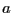

In this section, we will dissect piece-by-piece a small program
(written in C) which implements an NVT Metropolis Monte Carlo
simulation of a 2D Ising lattice. Click
here
to download the code.
You can compile the code using the command
An abbreviated listing of the code follows. Some comments in the
full, downloadable code have been omitted for space, and I have instead
explained each code fragment in accompanying text.
#include <stdio.h>
#include <stdlib.h>
#include <math.h>
#include <gsl/gsl_rng.h>
|
|
|
Standard headers for a C program, and
the header for the GSL random number
generator.
|
|
int E ( int ** F, int L, int i, int j ) {
return -2*(F[i][j])*
(F[i?(i-1):(L-1)][j]+F[(i+1)%L][j]+
F[i][j?(j-1):(L-1)]+F[i][(j+1)%L]);
}
|
|
|
A function that accepts as arguments the 2D array of spins, F; the
side-length, L, and a position (i,j), and returns the change in
energy upon flipping spin (i,j), without actually flipping it.
All variables are of integer type, int. The syntax ** F
means that F is a pointer to a pointer to an int. It is a
way of signifying that F is a 2D array. To access the i,j
element of F, the syntax is F[i][j]. The syntax i?(i-1):(L-1) expands as, ``If i is non-zero, return i-1;
otherwise (if i is zero), return L-1.'' This
implements periodic boundaries when looking to the west of spin
i,j. The syntax (i+1)%L returns (i+1) mod L, which
also implements periodic boundaries when looking to the east of
spin i,j.
|
|
void samp ( int ** F, int L, double * s, double * e ) {
int i,j;
*s=0.0;
*e=0.0;
for (i=0;i<L;i++) {
for (j=0;j<L;j++) {
*s+=(double)F[i][j];
*e-=(double)(F[i][j])*
(F[i][(j+1)%L]+F[(i+1)%L][j]);
}
}
*s/=(L*L);
*e/=(L*L);
}
|
|
A function that samples the current 2D array of
spins and computes the average spin,
 ,
and the average energy per spin,
.
The syntax x += y expands as x = x + y; the
same is true for other ``incremental'' operators, -=, *=,
and /=. Because s and e are ``passed by
reference'' (so that their values can be changed by
the function), we have to dereference them
with the * operator to access their contents; that
is *s means ``the contents of s''. ,
and the average energy per spin,
.
The syntax x += y expands as x = x + y; the
same is true for other ``incremental'' operators, -=, *=,
and /=. Because s and e are ``passed by
reference'' (so that their values can be changed by
the function), we have to dereference them
with the * operator to access their contents; that
is *s means ``the contents of s''.
|
|
void init ( int ** F, int L, gsl_rng * r ) {
int i,j;
for (i=0;i<L;i++) {
for (j=0;j<L;j++) {
F[i][j]=2*(int)gsl_rng_uniform_int(r,2)-1;
}
}
}
|
|
|
A function that randomly initializes the 2D array of spins. The
function gsl_rng_uniform_int(r,2) returns either 0 or 1
randomly, and we want each spin to be either 1 or -1. Note
that we have to pass in the random number generator we
created (as you will see) in the main program (below).
|
|
int main (int argc, char * argv[]) {
|
|
|
Main program begins here.
|
|
int ** F;
int L = 20;
int N;
double T = 1.0;
|
|
F is the the 2D array of spins; L is the sidelength of the array
(default value is 20); N is the total number of spins = L ; T is
the dimensionless temperature = (default is 1.0), where
is the unit energy of the Hamiltonian. ; T is
the dimensionless temperature = (default is 1.0), where
is the unit energy of the Hamiltonian.
|
|
int nCycles = 1000000;
int fSamp = 1000;
|
|
The number of cycles to run and the sample interval.
A cycle is a set of  attempted spin flips. attempted spin flips.
|
|
int nSamp;
int de;
double b;
double x;
int i,j,a,c;
|
|
|
Computed variables: number of samples taken, change in energy
upon spin flip, Boltzmann factor, random number, and loop
counters.
|
|
double s=0.0, ssum=0.0;
double e=0.0, esum=0.0;
|
|
Observables, average spin, , and average energy per
spin,  , and their respective accumulators for
their ensemble averages, all initialized to 0. , and their respective accumulators for
their ensemble averages, all initialized to 0.
|
|
gsl_rng * r = gsl_rng_alloc(gsl_rng_mt19937);
unsigned long int Seed = 23410981;
|
|
|
This line creates a random number generator of the "Mersenne Twister"
type, which is much better than the default random number
generator. This is why we need the GNU Scientific Library.
|
|
for (i=1;i<argc;i++) {
if (!strcmp(argv[i],"-L"))
L=atoi(argv[++i]);
else if (!strcmp(argv[i],"-T"))
T=atof(argv[++i]);
else if (!strcmp(argv[i],"-nc"))
nCycles = atoi(argv[++i]);
else if (!strcmp(argv[i],"-fs"))
fSamp = atoi(argv[++i]);
else if (!strcmp(argv[i],"-s"))
Seed = (unsigned long)atoi(argv[++i]);
}
|
|
|
Here we parse the command line arguments.
|
|
|
|
Seed the random number generator.
|
|
N=L*L;
F=(int**)malloc(L*sizeof(int*));
for (i=0;i<L;i++) F[i]=(int*)malloc(L*sizeof(int));
|
|
|
Compute the number of spins, , and
allocate memory for the 2D array of spins.
|
|
|
|
Initialize the 2D array of spins, and convert the temperature to
reciprocal temperature for computational convenience.
|
|
for (c=0;c<nCycles;c++) {
|
|
|
Let loop from 0 to nCycles-1.
|
|
|
|
Let  loop from 0 to N-1.
|
|
i=(int)gsl_rng_uniform_int(r,L);
j=(int)gsl_rng_uniform_int(r,L);
|
|
Randomly select spin  . The function
gsl_rng_uniform_int() is a from the
GSL. . The function
gsl_rng_uniform_int() is a from the
GSL.
|
|
de = E(F,L,i,j);
b = exp(de*T);
x = gsl_rng_uniform(r);
|
|
Compute
 , ,
 ,
and select a uniform random variate, ,
and select a uniform random variate,  . The
function gsl_rng_uniform() is from the GSL. . The
function gsl_rng_uniform() is from the GSL.
|
|
if (x<b) {
F[i][j]*=-1;
}
|
|
Evaluate the acceptance test, and if passed,
actually flip the spin. The last 6 lines of code
can be equivalently stated with just one line:
if (gsl_rng_uniform(r)<exp(E(F,L,i,j)*T)) F[i][j]*=-1;
|
|
|
|
Close the loop over spin flip trials.
|
|
if (!(c%fSamp)) {
samp(F,L,&s,&e);
ssum+=s;
esum+=e;
nSamp++;
}
|
|
|
If the cycle number is divisible by the requested sample frequency,
(as determined by asking whether c mod fSamp is zero), take a
sample, and update the accumulators.
|
|
|
|
Close the outer loop over nCycle cycles.
|
|
fprintf(stdout,
"# The average magnetization is %.5lf\n",
ssum/nSamp);
fprintf(stdout,
"# The average energy per spin is %.5lf\n",
esum/nSamp);
fprintf(stdout,"# Program ends.\n");
}
|
|
|
Output final information.
|
|